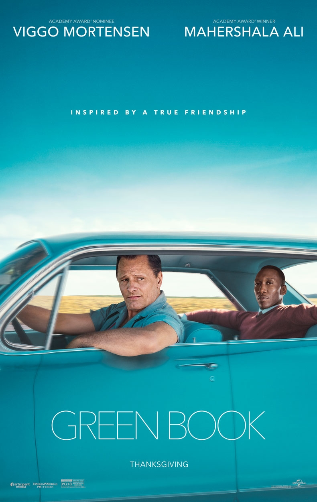
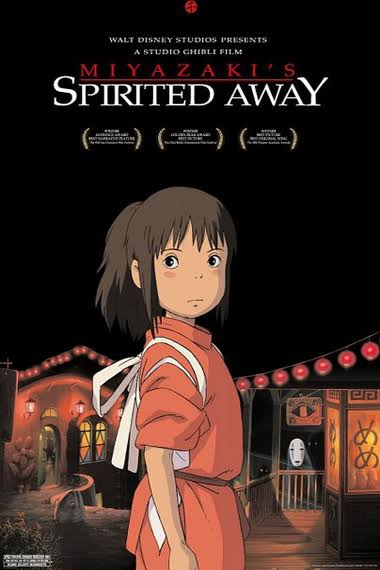

My Background
I am originally from Japan and I have been in Canada for more than 10 years. I enjoy the diversity in Vancouver. I feel privileged to get to enjoy food from all over the world. Since I came to Canada, I have spent the majority of my time in Vancouver. However, I have lived in Abbotsford, Surrey as well as Calgary and Edmonton in Alberta. I am very interested in visiting other parts of Canada.
My Interests
Food
I enjoy going out to eat. There are many restaurants I like. One of my go-to restaurants is a Vietnamese restaurant called Do Chay
Since I am more interested in vegetarian diet, vegetarian-friendly restaurants like Do Chay are the places I go often.
Plants
Another hobby of mine is collecting plants. It is rather a new hobby of mine. Now I have five plants to look after and I am expecting to get more.
Baking
In my spare time, I enjoy baking. Since I used to be a baker back in Japan, baking reminds me of the time in Japan. I also enjoy sharing baking goods I baked with my friends.
muffins that I baked recently. These are banana chocolate muffins with brandy.
Movies
I enjoy watching movies and tv shows as most people do. Here is my best 3 all time favorite movies.
Green Book
Spirited Away
Amelie
- 
Plot Summary
"In 1962, Tony "Tony Lip" Vallelonga, a tough bouncer, is looking for work when his nightclub is closed for renovations. The most promising offer turns out to be the driver for the African-American classical pianist Don Shirley for a concert tour into the Deep South states. Although hardly enthused at working for a black man, Tony accepts the job and they begin their trek armed with The Negro Motorist Green Book, a travel guide for safe travel through America's racial segregation. Together, the snobbishly erudite pianist and the crudely practical bouncer can barely get along with their clashing attitudes to life and ideals. However, as the disparate pair witness and endure America's appalling injustices on the road, they find a newfound respect for each other's talents and start to face them together. In doing so, they would nurture a friendship and understanding that would change both their lives."(as cited in IMDb website)
Click here to watch Green Book official trailer - 
Plot Summary
"Chihiro and her parents are moving to a small Japanese town in the countryside, much to Chihiro's dismay. On the way to their new home, Chihiro's father makes a wrong turn and drives down a lonely one-lane road which dead-ends in front of a tunnel. Her parents decide to stop the car and explore the area. They go through the tunnel and find an abandoned amusement park on the other side, with its own little town. When her parents see a restaurant with great-smelling food but no staff, they decide to eat and pay later. However, Chihiro refuses to eat and decides to explore the theme park a bit more. She meets a boy named Haku who tells her that Chihiro and her parents are in danger, and they must leave immediately. She runs to the restaurant and finds that her parents have turned into pigs. In addition, the theme park turns out to be a town inhabited by demons, spirits, and evil gods. At the center of the town is a bathhouse where these creatures go to relax. The owner of the bathhouse is the evil witch Yubaba, who is intent on keeping all trespassers as captive workers, including Chihiro. Chihiro must rely on Haku to save her parents in hopes of returning to their world."(as cited in IMDb website)
Click here for more details about the movie 
Plot Summary
"Amélie is a story about a girl named Amélie whose childhood was suppressed by her Father's mistaken concerns of a heart defect. With these concerns Amélie gets hardly any real-life contact with other people. This leads Amélie to resort to her own fantastical world and dreams of love and beauty. She later on becomes a young woman and moves to the central part of Paris as a waitress. After finding a lost treasure belonging to the former occupant of her apartment, she decides to return it to him. After seeing his reaction and his new found perspective - she decides to devote her life to the people around her. Such as, her father who is obsessed with his garden-gnome, a failed writer, a hypochondriac, a man who stalks his ex girlfriends, the "ghost," a suppressed young soul, the love of her life and a man whose bones are as brittle as glass. But after consuming herself with these escapades - she finds out that she is disregarding her own life and damaging her quest for love. Amélie then discovers she must become more aggressive and take a hold of her life and capture the beauty of love she has always dreamed of."(as cited in IMDb website)
Click here to watch a trailer Amelie